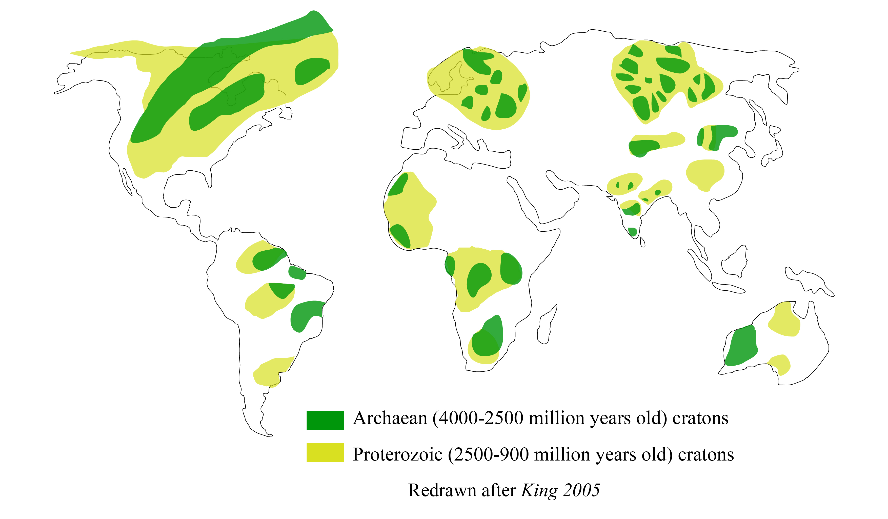

Centre for Earth Sciences
Indian institute of Science, Bangalore
e-mail :
jyotirmoyp@iisc.ac.in
Connect
 Orchid
Orchid

Centre for Earth Sciences
Indian institute of Science, Bangalore
e-mail :
jyotirmoyp@iisc.ac.in
PhD, IISc, Bangalore (2015- Ongoing)
Supervisor :
Dr. Attreyee Ghosh
M.Sc, Applied Geology, Jadavpur University 2015.
B.Sc, Geology, Jadavpur University, 2013.
Mantle-lithosphere interaction
Mantle Dynamics
Study of deep earth
Application of fluid dynamics in earth science.
My present work focuses on the interaction
between mantle convection and cratonic lithosphere.
Cratons (figure on the left) are the oldest part of the
earth still surviving today. Not only they are old, but they
have not experienced any significant deformation after
Precambrian (~540 million years before present). It is one of
the very fundamental questions to understand the reason for the
survival of cratons in tectonically active earth, where
everything other than these particular areas goes on recycling.
I simulate 3d spherical models by using CitcomS to observe the
stress and strain patterns under the cratons. I also develop
time-dependent forward modelling to observe how cratons have
evolved with time.
Geoscience Education An Interactive geoscience webblog for school kids
Science Vison A group of scientific documentary makers from Austria
Adventure Series talks At CEaS
Nancy Lesh The Dhrupad Cellist
pahar.in A digital data set of Central Asian Mountains
The Himalayan Club For Himalaya Lovers
khosrar khaata -The Draft An online poetry collection
In peer reviewed journals
4. J. Paul, A. Ghosh, 2020. Evolution of cratons through the ages:
A time-dependent study, Earth and Planetary Science Letters
[Online Version]
3. J. Paul, S. Mondal, R. Koyal, D. Sarkar, 2019. Burrow morphology of
the ocypodid crab Ocypode ceratophthalma at Chandipur Coast, Eastern India and
its implications. Current Science .
[Online version]
2. J. Paul, A. Ghosh, C.P. Conrad, 2019. Traction and strain-rate at the
base of the lithosphere: An insight into cratonic survival. Geophysical Journal International.
[Online version]
[Erratum]
1. A.S. Baidya, J. Paul, D.C. Pal, and D. Upadhyay, 2017.
Mode of occurrence and geochemistry of amphibole in the Kolihan-Chandmari copper deposits, Rajasthan, India: Insight into the ore-forming process. Ore Geology Reviews.
[Online Version]
Conference Presentations
13. J. Paul, A. Ghosh, 2020. Understanding deformation of cratons in presence of mid-lithospheric discontinuity.
EGU General Assembly, Viena. [Online version]
12. J. Paul, A. Ghosh, 2020. On survival of cratonic lithosphere. 36th International
Geological Congress, Delhi.
11. J. Paul, A. Ghosh, 2019. Evolution of cratons in time-dependent mantle convection models.
AGU Fall Meeting, San Francisco
[Online version]
10. A. Ghosh, J. Paul, Effect of Weak Mid-lithospheric Discontinuities on the Survival of Cratons.
AGU Fall Meeting, San Francisco.
[Online version]
9. J. Paul, A. Ghosh, 2019. Time dependent 3-D numerical modeling of the cratonic evolution.
Ada Lovelace Workshop, Siena, Italy.
[Online version]
[Poster]
8. J. Paul, A. Ghosh , 2019, Evolution and survival potential of cratons:
A numerical study. IUGG General Assembly, Montreal.
[Online version]
7. J. Paul , A. Ghosh, 2018, Stability of cratons since early Phanerozoic.
AGU Fall Meeting, Washington DC.
[Online version]
[Poster]
6. A. Ghosh, J. Paul , C.P. Conrad, 2018, The Relation Between Tractions and Strain Rate at the Base of the Lithosphere:
Key to Understanding Cratonic Stability.
AGU Fall Meeting, Washington DC.
[Online version]
[Poster]
5. J. Paul , A. Ghosh, 2018, Variation of traction and strain rate
with lithospheric thickness: An insight into understanding cratonic stability. EGU General Assembly,
Vienna. [Online Version] [Poster]
4. J. Paul, A.S. Baidya, and D.C. Pal, 2015, Origin of alternate
amphibole and quartz rich bands in amphibole bearing quartzite from North Khetri Copper Belt, Rajasthan, India, AGU Fall Meeting, San Francisco, V23B-3161
[Online Version]
3. A.S. Baidya , J. Paul, and Pal D. C., 2014, Multiple stages of
amphibole formation in the Chandmari Cu-deposit, Khetri copper belt, Rajasthan:
implications for changing fluid composition vis-à-vis sulfide mineralization, National Conference on Making of the Indian Continent, Presidency University, Kolkata.
[RG pdf]
2. J. Paul, 2014, Diversity of Indian climate and its effect on Indian
music, 3 rd YES Congress, Dar Es Salaam, Tanzania Abstract Volume
1. J. Paul, and S. Mondal, 2013, Ecological significance of Ocypode
crab burrows: A case study from Chandipur, Eastern Coast of India, National
Conference on Earth Science in India: Challenges and Emerging Trends, Indian
Institute of Technology, Roorkee, Abstract volume.
2. How did the Oldest Part of the Earth Still Survive Today, AWSAR Scheme, Department of Science and Technology, India
1. EGU 2018: Experience of a first time attendee, European Geoscience Union, Geodynamics division
[Link]